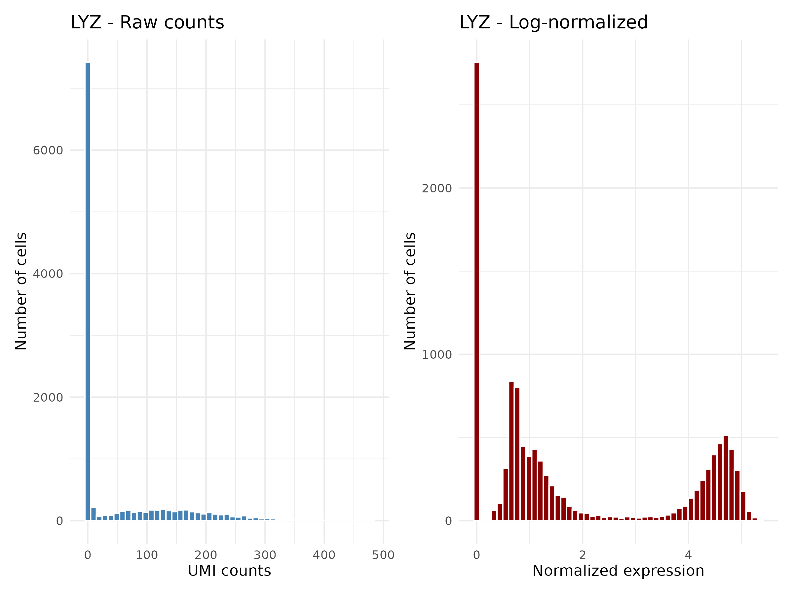
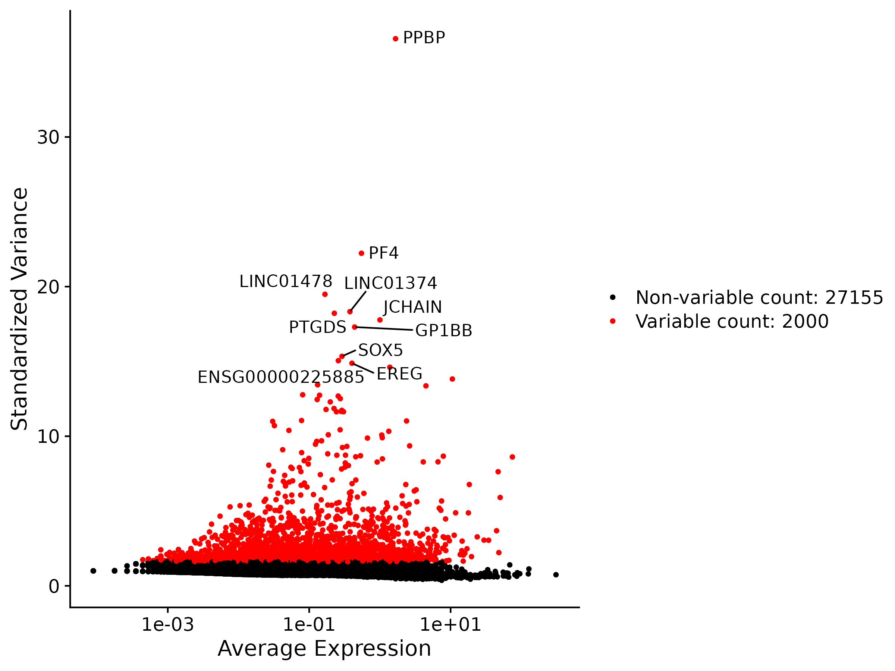
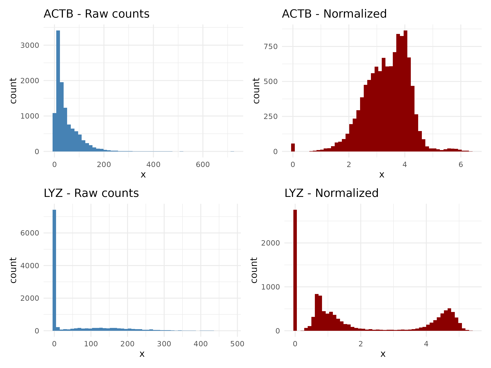

Normalization and Feature Selection
Last updated on 2026-07-14 | Edit this page
Overview
Questions
- Why do we need to normalize scRNA-seq data before comparing cells?
- How does log normalization work and where are the results stored?
- What are highly variable features and why do we select them?
- What does scaling do and when should we regress out confounders?
- How does SCTransform differ from the LogNormalize workflow?
Objectives
- Apply log normalization to correct for differences in sequencing depth between cells
- Identify highly variable features using variance-stabilizing transformation
- Scale the data to prepare for PCA
- Describe SCTransform as an alternative to the three-step LogNormalize workflow
Prerequisites
This episode requires an RStudio session on the Negishi cluster.
Launch RStudio (bioconductor) under
Bioinformatics Apps on Open OnDemand as
described in the Setup
instructions. You will also need the pbmc_filtered.rds
object saved at the end of the previous episode.
Setup
R
library(Seurat)
library(ggplot2)
library(patchwork)
Loading the Filtered Data
We start from the filtered Seurat object saved at the end of the previous episode. This object contains only cells that passed our QC thresholds.
Set up the working directory to match the previous episode:
R
work_dir <- paste0(
"/scratch/negishi/", Sys.getenv("USER"),
"/scrna_workshop/"
)
setwd(work_dir)
R
pbmc <- readRDS(paste0(work_dir, "pbmc_filtered.rds"))
pbmc
OUTPUT
An object of class Seurat
29155 features across 11310 samples within 1 assay
Active assay: RNA (29155 features, 0 variable features)
1 layer present: countsThe object has 29,155 genes and 11,310 cells. Only the
counts layer is populated at this stage. By the end of this
episode we will fill in the data and
scale.data layers as well.
Right now, the only expression data we have is raw UMI counts. Before we can compare gene expression between cells, we need to address a fundamental problem: cells are sequenced to different depths.
Consider two cells that are biologically identical – they express the same genes at the same levels. If Cell A was sequenced to 5,000 total UMIs and Cell B to 10,000 total UMIs, every gene in Cell B will appear to have roughly twice the counts of Cell A. This is purely a technical artifact of sequencing depth, not a biological difference. Normalization corrects for this so that expression values are comparable across cells.
Log Normalization
The standard normalization in Seurat is LogNormalize. It applies a simple three-step transformation to each cell independently:
- Divide each gene’s count by the cell’s total UMI count
- Multiply by a scale factor (default 10,000) so the values are not tiny fractions
-
Log-transform with
log1p(natural log of 1 + x) to compress the dynamic range
The formula for a single gene g in cell c is:
normalized(g, c) = log(1 + count(g, c) / total_counts(c) x 10000)
R
pbmc <- NormalizeData(pbmc,
normalization.method = "LogNormalize",
scale.factor = 10000)
| Parameter | Value | Description |
|---|---|---|
normalization.method |
"LogNormalize" |
Divide by total counts, multiply by scale factor, log1p transform. |
scale.factor |
10000 |
Multiplicative factor applied after dividing by total counts. The default 10,000 means normalized values are in “counts per 10,000” before log transformation. |
After normalization, the results are stored in the data
layer of the RNA assay:
R
pbmc
OUTPUT
An object of class Seurat
29155 features across 11310 samples within 1 assay
Active assay: RNA (29155 features, 0 variable features)
2 layers present: counts, dataNotice that we now have 2 layers:
counts (raw) and data (normalized).
You can access each layer directly:
R
# Raw counts for the first 5 genes in the first 3 cells
pbmc[["RNA"]]$counts[1:5, 1:3]
# Normalized values for the same genes and cells
pbmc[["RNA"]]$data[1:5, 1:3]
OUTPUT
# Raw counts for the first 5 genes in the first 3 cells
5 x 3 sparse Matrix of class "dgCMatrix"
AAACCCAAGCGCCCAT-1 AAACCCAAGGTTCCGC-1 AAACCCACAGACAAGC-1
ENSG00000238009 . . .
ENSG00000239945 . . .
ENSG00000241860 . . .
ENSG00000290385 . . .
ENSG00000235146 . . .
# Normalized values for the same genes and cells
5 x 3 sparse Matrix of class "dgCMatrix"
AAACCCAAGCGCCCAT-1 AAACCCAAGGTTCCGC-1 AAACCCACAGACAAGC-1
ENSG00000238009 . . .
ENSG00000239945 . . .
ENSG00000241860 . . .
ENSG00000290385 . . .
ENSG00000235146 . . .The first few genes in the matrix are mostly zeros, so the output above is not very illuminating. To see the actual difference between raw and normalized values, we can filter for genes with non-zero counts first:
R
# Raw counts for the first 5 genes in the first 3 cells, with row sum > 0
mat <- pbmc[["RNA"]]$counts[, 1:3]
mat[rowSums(mat) > 0, ][1:5, ]
# Normalized values for the same genes and cells, with row sum > 0
mat2 <- pbmc[["RNA"]]$data[, 1:3]
mat2[rowSums(mat2) > 0, ][1:5, ]
OUTPUT
# Raw counts for the first 5 genes in the first 3 cells, with row sum > 0
5 x 3 sparse Matrix of class "dgCMatrix"
AAACCCAAGCGCCCAT-1 AAACCCAAGGTTCCGC-1 AAACCCACAGACAAGC-1
ISG15 1 2 .
C1orf159 . 1 .
SDF4 . 2 .
B3GALT6 . 1 .
DVL1 . 1 .
# Normalized values for the same genes and cells, with row sum > 0
5 x 3 sparse Matrix of class "dgCMatrix"
AAACCCAAGCGCCCAT-1 AAACCCAAGGTTCCGC-1 AAACCCACAGACAAGC-1
ISG15 1.20458 0.5174592 .
C1orf159 . 0.2918332 .
SDF4 . 0.5174592 .
B3GALT6 . 0.2918332 .
DVL1 . 0.2918332 .Visualizing the effect of normalization
To see what normalization does, let’s compare the distribution of a gene before and after normalization. We’ll look at LYZ, a marker for CD14+ monocytes that has high and variable expression across cells.
R
# Extract raw and normalized values for LYZ
lyz_raw <- pbmc[["RNA"]]$counts["LYZ", ]
lyz_norm <- pbmc[["RNA"]]$data["LYZ", ]
p1 <- ggplot(data.frame(x = as.numeric(lyz_raw)), aes(x = x)) +
geom_histogram(bins = 50, fill = "steelblue", color = "white") +
labs(title = "LYZ - Raw counts", x = "UMI counts", y = "Number of cells") +
theme_minimal()
p2 <- ggplot(data.frame(x = as.numeric(lyz_norm)), aes(x = x)) +
geom_histogram(bins = 50, fill = "darkred", color = "white") +
labs(title = "LYZ - Log-normalized", x = "Normalized expression", y = "Number of cells") +
theme_minimal()
p1 + p2

The raw count distribution is heavily right-skewed with a large spike at zero (cells that don’t express LYZ – mostly non-monocytes). After log normalization, the non-zero values are spread more evenly and the influence of sequencing depth differences is reduced.
Identifying Variable Features
The human genome contains roughly 20,000 protein-coding genes, but not all of them are informative for distinguishing cell types. Many genes are:
- Housekeeping genes expressed at similar levels in every cell (e.g., ACTB, GAPDH). These carry no information about cell identity.
- Low-expression genes detected in only a handful of cells. These are too noisy to contribute meaningfully.
- Constant genes that show little variation across cells.
Highly variable features (HVGs) are genes that vary substantially from cell to cell. These are the genes most likely to capture biological differences between cell types. By selecting the top 2,000 variable features, we focus downstream analysis (PCA, clustering) on the genes that matter most, while reducing noise and computation time.
R
pbmc <- FindVariableFeatures(pbmc,
selection.method = "vst",
nfeatures = 2000)
| Parameter | Value | Description |
|---|---|---|
selection.method |
"vst" |
Variance-stabilizing transformation. Fits a mean-variance relationship across genes using local regression, then selects genes with the highest standardized variance (i.e., genes that vary more than expected given their expression level). |
nfeatures |
2000 |
Number of variable features to select. 2,000 is the standard default for most scRNA-seq analyses. |
Let’s see which genes were selected:
R
head(VariableFeatures(pbmc), 10)
OUTPUT
[1] "PPBP" "PF4" "LINC01478" "LINC01374" "PTGDS"
[6] "JCHAIN" "GP1BB" "SOX5" "ENSG00000225885" "EREG" The top variable features include PPBP and PF4 (platelet markers), GP1BB (also platelets), JCHAIN (B/plasma cells), and PTGDS (dendritic cells). Several lincRNAs and an Ensembl ID also appear due to sparse but extreme expression in a few cells. These genes are highly expressed in specific cell types but absent in others, producing high cell-to-cell variance.
Visualize the variable feature selection with a mean-variance plot:
R
vf_plot <- VariableFeaturePlot(pbmc)
top10 <- head(VariableFeatures(pbmc), 10)
LabelPoints(plot = vf_plot, points = top10, repel = TRUE)

In this plot, each point is a gene. The x-axis shows mean expression across cells and the y-axis shows standardized variance. The red points are the 2,000 selected variable features. Genes in the upper right are both highly expressed and highly variable – these are strong cell-type markers. Genes along the bottom have low variance relative to their expression level and are excluded.
Scaling
The final step before PCA is scaling.
ScaleData() applies a z-score transformation to each gene
across all cells: it subtracts the mean expression and divides by the
standard deviation. After scaling, each gene has mean 0 and standard
deviation 1.
Why is this necessary? Without scaling, PCA would be dominated by highly expressed genes simply because they have larger absolute values, not because they carry more biological information. Scaling puts all genes on equal footing so that PCA identifies the axes of true biological variation rather than expression magnitude.
R
pbmc <- ScaleData(pbmc)
By default, ScaleData() only scales the variable
features (the 2,000 genes selected above), not all ~29,000 genes. This
is faster and sufficient for PCA, which only uses variable features. If
you later need scaled values for all genes (e.g., for a heatmap of a
non-variable gene), you can re-run ScaleData() with
features = rownames(pbmc).
After scaling, a third layer appears in the object:
R
pbmc
OUTPUT
An object of class Seurat
29155 features across 11310 samples within 1 assay
Active assay: RNA (29155 features, 2000 variable features)
3 layers present: counts, data, scale.dataAll three layers are now populated: counts (raw),
data (log-normalized), and scale.data
(z-scored variable features).
Regressing out confounders
ScaleData() can optionally regress out
unwanted sources of variation using the vars.to.regress
parameter. A common use case is regressing out mitochondrial percentage
so that cell damage does not influence clustering:
R
# Optional: regress out mitochondrial percentage
pbmc_regressed <- ScaleData(pbmc, vars.to.regress = "percent.mt")
This fits a linear model for each gene with percent.mt
as a covariate and uses the residuals as the scaled expression values.
The effect is that variation driven by mitochondrial content is removed
before PCA.
When to regress:
- Mitochondrial percentage is driving a major axis of variation in PCA (i.e., one of the top PCs strongly correlates with percent.mt)
- You see cells grouping by mitochondrial content rather than cell type
When NOT to regress:
- Mitochondrial content correlates with real biology. Some cell types (e.g., cardiomyocytes, metabolically active immune cells) naturally have higher mitochondrial gene expression. Regressing it out would remove legitimate biological signal.
- The QC filtering in the previous episode already removed high-mt cells, and the remaining variation is modest.
For this workshop, we proceed without regression
because our QC filtering already removed cells with
percent.mt > 15, and the remaining variation does not
dominate the PCA.
Save the normalized object for the next episode:
R
saveRDS(pbmc, file = "pbmc_normalized.rds")
SCTransform as an Alternative
SCTransform: a one-step alternative
The three-step LogNormalize workflow (NormalizeData +
FindVariableFeatures + ScaleData) works well
for most datasets, but it has limitations. The log transformation can
over-stabilize variance for lowly expressed genes and under-stabilize it
for highly expressed genes. This matters most when there is high
technical noise in the data.
SCTransform addresses this by using regularized negative binomial regression. It models each gene’s expression as a function of total UMI counts per cell, estimates the expected variance at each expression level, and returns Pearson residuals that serve as normalized, variance-stabilized values. A single function call replaces all three steps:
R
pbmc_sct <- SCTransform(pbmc, vst.flavor = "v2")
| Parameter | Value | Description |
|---|---|---|
vst.flavor |
"v2" |
Use the improved v2 algorithm (Choudhary & Satija, 2022) with better variance estimation for sparse data. |
Key differences from LogNormalize:
- Replaces three steps with one: normalization, feature selection, and scaling are all handled internally.
-
Selects 3,000 variable features by default
(vs. 2,000 for
FindVariableFeatures), which can improve resolution for complex tissues. - Better variance stabilization across the full range of expression levels.
-
Stored in a separate assay: results go into an
assay called
SCTrather than modifying theRNAassay. TheRNAassay retains the raw counts for reference.
When to use SCTransform:
- For publication-quality analyses, especially with complex tissues or datasets with high technical variance.
- When you observe that LogNormalize produces clusters driven by sequencing depth rather than biology.
When LogNormalize is sufficient:
- For exploratory analysis and quick overviews.
- When the dataset is well-behaved and you want a simpler, faster workflow.
- For direct comparability with older analyses and tutorials.
In this workshop, we use LogNormalize throughout for simplicity and because it produces excellent results with this well-characterized PBMC dataset. However, SCTransform is the preferred method for most production analyses.
Challenge 1: LogNormalize vs. SCTransform variable features
Run both normalization approaches on the same filtered dataset and compare the top 20 variable features from each method. How many genes appear in both lists?
R
# LogNormalize pathway (already done above)
lognorm_top20 <- head(VariableFeatures(pbmc), 20)
# SCTransform pathway
pbmc_sct <- SCTransform(pbmc, vst.flavor = "v2")
sct_top20 <- head(VariableFeatures(pbmc_sct), 20)
# Compare
cat("LogNormalize top 20:\n")
print(lognorm_top20)
cat("\nSCTransform top 20:\n")
print(sct_top20)
cat("\nGenes in both lists:\n")
shared <- intersect(lognorm_top20, sct_top20)
print(shared)
cat("\nOverlap:", length(shared), "out of 20\n")
OUTPUT
LogNormalize top 20:
[1] "PPBP" "PF4" "LINC01478" "LINC01374" "PTGDS"
[6] "JCHAIN" "GP1BB" "SOX5" "ENSG00000225885" "EREG"
[11] "TCF4" "IGKC" "ZNF385D" "GNLY" "LYPD2"
[16] "CUX2" "LINGO2" "CAVIN2" "CLNK" "HTR1F"
SCTransform top 20:
[1] "S100A9" "S100A8" "GNLY" "IGKC" "PPBP" "IGLC2" "LYZ" "PF4" "GP1BB" "NRGN" "IGLC3"
[12] "IGHM" "CAVIN2" "AFF3" "NKG7" "GNG11" "BANK1" "VCAN" "TUBB1" "LINGO2"
Genes in both lists:
[1] "PPBP" "PF4" "GP1BB" "IGKC" "GNLY" "LINGO2" "CAVIN2"The overlap is 7 out of 20 (~35%), which is lower than you might expect. The shared genes are PPBP, PF4, GP1BB, IGKC, GNLY, LINGO2, and CAVIN2.
The two methods rank variable genes quite differently:
- LogNormalize + vst picks up several lincRNAs (LINC01478, LINC01374) and even an Ensembl ID (ENSG00000225885) in the top 20. These are genes with sparse but extreme expression in a few cells, which inflates their residual variance in the vst model.
- SCTransform surfaces well-known immune markers instead: S100A9, S100A8, LYZ, NKG7, VCAN. Its negative binomial model is more robust to outlier cells, so it favors genes with consistent cell-type-specific expression over genes that are simply noisy.
Despite only 35% overlap in the top 20, the broader variable feature sets (all 2,000-3,000 genes) agree much more. The top-ranked differences rarely change the downstream PCA, clustering, or cell type assignments because both methods capture the same major axes of biological variation. The practical difference is that SCTransform tends to produce cleaner ranked lists with fewer noise-driven genes at the top.
glmGamPoi speeds up SCTransform
If you see the warning about glmGamPoi not being installed, SCTransform still runs but falls back to a slower implementation. Install it for faster runs:
R
BiocManager::install("glmGamPoi")
Challenge 2: Housekeeping vs. Variable Gene Behavior
Plot the expression of ACTB (a housekeeping gene) and LYZ (a variable monocyte marker) before and after normalization. What changes for each gene, and why?
R
# Extract raw and normalized values
actb_raw <- as.numeric(pbmc[["RNA"]]$counts["ACTB", ])
actb_norm <- as.numeric(pbmc[["RNA"]]$data["ACTB", ])
lyz_raw <- as.numeric(pbmc[["RNA"]]$counts["LYZ", ])
lyz_norm <- as.numeric(pbmc[["RNA"]]$data["LYZ", ])
p1 <- ggplot(data.frame(x = actb_raw), aes(x)) +
geom_histogram(bins = 50, fill = "steelblue") +
labs(title = "ACTB - Raw counts") + theme_minimal()
p2 <- ggplot(data.frame(x = actb_norm), aes(x)) +
geom_histogram(bins = 50, fill = "darkred") +
labs(title = "ACTB - Normalized") + theme_minimal()
p3 <- ggplot(data.frame(x = lyz_raw), aes(x)) +
geom_histogram(bins = 50, fill = "steelblue") +
labs(title = "LYZ - Raw counts") + theme_minimal()
p4 <- ggplot(data.frame(x = lyz_norm), aes(x)) +
geom_histogram(bins = 50, fill = "darkred") +
labs(title = "LYZ - Normalized") + theme_minimal()
(p1 + p2) / (p3 + p4)

ACTB (housekeeping gene):
- Before normalization: the raw count distribution is right-skewed because cells with higher sequencing depth have proportionally more ACTB counts. The apparent variation is mostly technical (sequencing depth), not biological.
- After normalization: the distribution becomes approximately bell-shaped, centered around 3.5-4 on the log-normalized scale. Because ACTB is expressed at similar levels across all cell types, removing depth effects reveals a tight, unimodal distribution. This is exactly why ACTB is not selected as a variable feature – it doesn’t help distinguish cell types.
LYZ (variable gene):
- Before normalization: there is a massive spike at zero (~7,000 cells that don’t express LYZ) and a low, flat spread of non-zero values extending to ~500. The zero-dominated distribution makes it hard to see any structure in the expressing cells.
- After normalization: the zero spike persists (you can’t normalize away true absence of expression), but the non-zero cells now reveal a clear bimodal pattern – a small cluster of cells with low expression (~1-2) and a distinct second peak of highly expressing cells (~4-5). This bimodality reflects the biological reality: CD14+ monocytes express LYZ at high levels, while other cell types either don’t express it at all or express it minimally. This separation is why LYZ is selected as a highly variable feature.
The key takeaway: normalization makes expression comparable across cells by removing sequencing depth effects. Housekeeping genes become unimodal (confirming they don’t vary biologically), while cell-type marker genes reveal biologically meaningful structure – like the bimodal split in LYZ – that was obscured by technical noise in the raw counts.
- Log normalization corrects for sequencing depth by dividing by total counts, scaling, and log-transforming each cell independently
- Highly variable features are the ~2,000 genes with the most cell-to-cell variation, capturing biological differences while excluding housekeeping genes and noise
- Scaling (z-score transformation) centers and standardizes gene expression so that PCA is not dominated by highly expressed genes
- Regressing out confounders like percent.mt during scaling is optional and should only be done when technical variation is obscuring biology
- SCTransform is a one-step alternative that uses regularized negative binomial regression and is recommended for publication-quality analyses